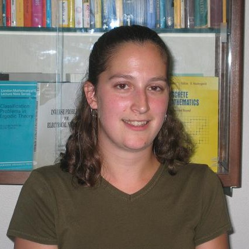

Christine Lind Cole - Home
| E-mail: | clind at amath.washington.edu |
|
My application area is Mathematical Biology, and my dissertation topic
was Mathematical Models for Facilitated Diffusion and Molecular Motors,
which I studied under my advisor,
Hong Qian.
I sucessfully defended my Ph.D. on August 31, 2011.
I also completed a M.Sc. in Applied Mathematics at the University of Washington in the fall of 2004.
I received my B.A. from Macalester College (St. Paul, Minnesota) in 2002,
with a double Math and Physics major. I grew up in Tacoma, Washington.
I love the Northwest, and I am glad that I no longer have to deal with Minnesota summers or winters.
My non-academic hobbies include playing soccer, rock climbing, photography, and reading.
|
|

|
Christine Lind Cole - Teaching
Christine Lind Cole - Teaching
|
Spring 2009: Boeing Service/Teaching Award
(for outstanding teaching
and service by a student in the department of Applied Mathematics at the
University of Washington during the 2008-2009 academic year)
|
| Spring 2009: AMATH 383 - Introduction to Continuous Mathematical Modeling |
| Summer 2008: AMATH 383 - Introduction to Continuous Mathematical Modeling |
| Spring 2006: AMATH 351 - Introduction to Differential Equations and Applications |
| Other Teaching Experience: | |
|
|
Christine Lind Cole - Research
Christine Lind Cole - Research
|
|
My research interests lie in the field of mathematical biology. I study mathematical models for molecular motors with my advisor, Hong Qian.
More Details to Come Soon...
|
|
|
Christine Lind Cole - Publications
Christine Lind Cole - Publications
|
|
Christine Lind Cole, Hong Qian. "Simple Chemical Model for Facilitated Transport with an Application to Wyman-Murray Facilitated Diffusion" Acta Phys. -Chim. Sin., 2010, 26(11): 2857-2864. (abstract)
|
| Undergraduate Publications: | |
|
J. N. Heyman, H. Wrage, C. Lind, D. Hebert, P. Neocleous, P.A. Crowell, T. Müller, K. Unterrainer."Terahertz Emission From Magneto-plasma Oscillations in Semiconductors", Ultrafast Phenomena in Semiconductors VI, Tsen, Song,Jiang,Editors, Proceedings of the SPIE Vol 4163, pp. 12-18, 2002.
|
|
|
Christine Lind Cole - Presentations
Christine Lind Cole - Presentations
|
| Conference Presentations: | |
| Other Research Presentations: | |
I make most of my presentations using beamer, a LaTeX document class.
I highly recommend it for making pdf based presentations that will look good on any computer with a pdf reader!
|
|
|